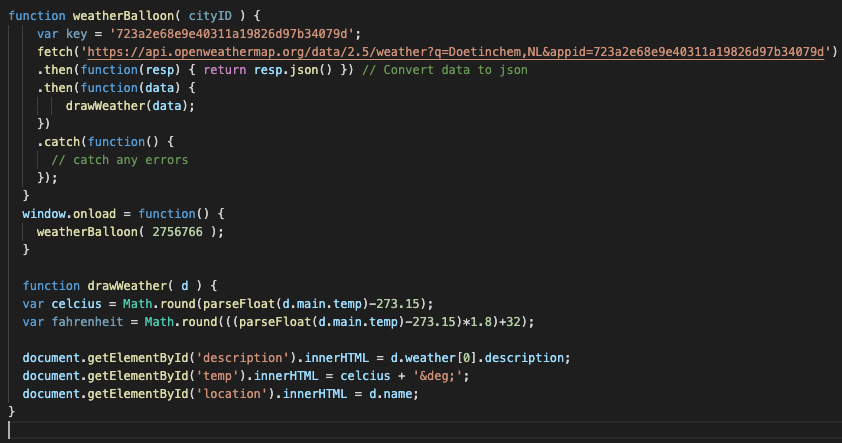

Smart Connection
De voorbereiding
De eerste les van het thema Smart Connection was op de tweede dag van de minor Smart Industry. Hiervoor kregen we een mailtje dat we bepaalde software
moesten installeren. Dit waren de volgende programma's: R & RStudio, Github en Moodle. Al deze programma's waren nog onbekend voor mij. Op de opleiding technische
bedrijfskunde ben ik nog nooit in aanraking gekomen met programmeren of iets wat erop lijkt. Toch ging ik er met een open blik in en met de instelling dat het me
er leuk en handig leek om te kunnen programmeren. Als ik aan dingen denk die ik in dit thema zou willen leren zijn dat: website maken, weten hoe systemen met elkaar
communiceren en op welke manier technologie ingezet kan worden voor procesoptimalisatie.
De les
De eerste les ging over het voornamelijk over het in orde krijgen van de programma's zodat dit in de rest van het blok geen probleem meer kan vormen. Met name Github was een
programma waar veel over gesproken werd. Het idee van Github is dat het fungeert als een platform voor software development. Software kan er makkelijk op gedeeld worden zodat mensen
van elkaar kunnen leren en elkaars software kunnen verbeteren. Ik geloof erin dat deze vorm van Open Source ontwikkeling op het gebied van software erg stimuleerd en wist niet dat er een
programma als deze bestond. Interessant dus!
Zelfontwikkeling
Terugkijkend op deze eerste les was het voor mij puur kennis maken met de programma's en de manier van werken. Ook de structuur van de minor is mij deze les duidelijker geworden. Het heeft
mij erg nieuwsgierig gemaakt voor wat er zal gaan volgen deze periode!
De voorbereiding
De tweede les van Smart Connection ging over het Front end web development HTML en CSS. Zelf heb ik van beide programma's wel eens gehoord, maar nog nooit mee gewerkt. Hierdoor was het voor mij relatief
meer werk om kennis te krijgen van deze programmeertalen, maar leek het me wel interessant. De voorbereiding van deze les was het kijken van een tweetal filmpjes van beide een uur over HTML en
CSS. Mijn insteek was om met deze filmpjes goed mee te typen zodat ik een basis zou hebben voor mijn website, maar dit was lastiger dan ik dacht. Ik had al
snel door dat het een kwestie van oefenen, oefenen en nog eens oefenen was. Beide filmpjes hebben mij daar heel goed bij geholpen. Na een aantal dingen proberen en veranderen, is dit eruit gekomen:

Naast het oefenen heb ik ook meegeschreven zodat ik het nog eens terug kan lezen.

De les
Tijdens de les werden alle onderdelen van de video herhaald zodat iedereen deze zou snappen. Hierbij was het zaak om een pagina van zowel HTML alleen als een combinatie van HTML en CSS te maken. Ik had ervoor gekozen om HTML en
CSS gescheiden in een pagina te doen, dit werd namelijk ook in het filmpje uitgelegd en beviel me goed. Ik heb deze beide pagina's aan elkaar gelinked door bijvoorbeeld dit in de HTML tekst te zetten "link rel="stylesheet" type="text/css" href="Smartconnection.css".
In het begin was er erg lang bezig met een relatief simpele pagina omdat ik erg perfectionistisch was, terwijl ik het nog niet helemaal onder de knie had. Toen ik dit zelf door kreeg besloot ik om eerst een simpele opmaak te maken om hem vervolgens iets te veranderen.
Dit beviel me goed.
Ook zocht ik zelf veel dingen op op W3Schools om het nog beter onder de knie te krijgen. Bij het maken van een website heb ik voornamelijk geprobeerd om alles zelf uit te typen. Dit heeft voor mij altijd als voordeel dat ik het dan
beter onthoud en het ook vaker kan gebruiken op andere websites die ik maak. Hieronder een aantal betekenissen die ik geleerd heb als basis van HTML en CSS, de rest heb ik laten zien door middel van deze website:
HTML: "HyperText Markup Language" wordt gebruikt voor de tekst en de inhoud van een website. Het kan worden gezien als de basis van een website.
CSS: "Cascading Style Sheets" zoals de afkorting al zegt is CSS een opmaaktaal die zorgt voor de vormgeving van een HTML pagina.
Zelfontwikkeling
Door weet te hebben van de werking van deze programmeertalen is het voor een bedrijfskundige gemakkelijker te communiceren met een ICT-expert wanneer er bijvoorbeeld een website gemaakt moet worden. Naast een toevoeging aan de algemene kennis vind ik
dat HTML en CSS ook kan bijdragen aan de vorm van rapporteren. Het maken van een website is erg overzichtelijk en, wanneer je het onder de knie hebt, niet heel lastig (de basis). Daarom vind ik het goed om me extra te gaan verdiepen in deze thema's. Je
weet maar nooit waar je het ooit voor nodig kan hebben als technisch bedrijfskundige!
De voorbereiding
De volgende les binnen het thema Smart Connection gaat een stapje verder wat betreft web development. Het gaat namelijk over JavaScript. Ook de naam van dit programma heb ik wel eens horen vallen, maar nog nooit mee gewerkt. Ook deze voorbereiding bestond uit een
filmpje waarin de basis van de programmeertaal werd uitgelegd. Hierin merkte in meteen dat, wanneer je de basis van HTML en CSS nog niet onder controle hebt, dit erg veel is binnen twee weken. Toch wilde ik wel een poging doen tot het begrijpen van de programmeertaal.
In het filmpje werd uitgelegd wat JavaScript is. Het is namelijk de meest gebruikte programmeertaal ter wereld, dus handig om te leren. JS wordt gebruikt voor Front-end, Back-end of Full-stack development. Het wordt dus gebruikt
voor websites, apps of spelletjes. JS wordt gebruikt om het gedrag van een website te beschrijven, bijvoorbeeld wat moet er gebeuren wanneer ik op iets klik. Zie de uitklappende kopjes op deze website. JS is opgebouwd uit variabelen met een bepaalde waarde. De waarde van deze variabelen,
die aangeduid worden met let, worden zelf door de programmeur bepaald. Hier een stukje JS waarmee ik heb geoefend:

De les
In de les gingen we verder over het thema JS. Dit was voor mij al een redelijk hoog niveau JS omdat ik nog niet zo ver was. Hierdoor besloot ik verder te gaan met kijken wat JS voor mijn website of voor mijzelf kan betekenen. Ik heb geprobeerd om op mij homepagina iets JS toe te voegen.
Hiervoor heb ik een aantal filmpjes bekeken en leek het mij leuk om de tijd toe te voegen aan de homepagina, helemaal onderaan. Hiervoor heb ik dit filmpje gebruikt.

Hierin begon ik met het definiëren van de variabele binnen de functie ShowTime. Hierin wordt de tijd uitgedrukt in myTimer en 1000 miliseconde. Vervolgens moeten de waarde opgehaald worden. Door de functie Let today = New Date worden alle waarde opgehaald. Dit zijn today.gethours/minutes en seconds.
Het volgende stukje werkte niet helemaal bij mij. Dit was het AM/PM gedeelte. Dit is een ALS functie waarbij er wordt verteld dat er PM moet staan na 12 uur smiddags en AM voor 12 uur smiddags. Vervolgens wordt de JS toegevoegd aan een id in de tekst: time. En wordt hij geactiveerd.
Zelfontwikkeling
Terugkijken op deze week heb ik veel geleerd over JS door zelf onderzoek te doen. Er staan heel veel filmpjes op het internet die gaan over web development. Ook sites als W3Schools helpen hier heel erg bij. Wanneer je de tijd neemt, kan denk ik iedereen het leren. Ik vind het dan ook leuk om er de tijd
voor genomen te hebben en mijn kennis, door zelf onderzoek te doen, vergroot te hebben. Het is een onderwerp waar ik zonder deze minor weinig mee in aanraking zou komen waarschijnlijk, dus ik vind het goed om mijn kennis op deze manier te kunnen vergroten.
De voorbereiding
De voorbereiding van deze week ging over filmpjes die uitlegde wat SQL en Non-SQL databases inhouden. Binnen mij studie hebben we het een aantal keer gehad over databases. We hebben namelijk een blok lang de basis van Access gehad. Doordat databases tegenwoordig zoveel voorkomen, vind ik het ook een
interessant onderwerp om meer over te weten te komen. Ik heb momenteel namelijk een minimale kennis van de werking van de systemen en de manier waarop deze aangestuurd worden. Ik hoop er in deze les meer te weten over te komen om het in mijn voordeel te kunnen gebruiken.
Voor een technisch bedrijfskundige is data namelijk erg belangrijk voor procesoptimalisatie. Toch is deze data lang niet altijd geordend. Om meer te weten over databases heb ik daarom allereerst dit filmpje gekeken.
De les
In het filmpje in de voorbereiding werd ingegaan op NoSQL databases. In een database worden namelijk rijen gedefinieerd met een primaire key en een aantal waarde die iets zeggen over deze rij. Bijvoorbeeld: nummmer 250 is "A Bart" ; 19 jaar. Nummer 250 is hierin uniek. Elk hokje een een tabel heeft een eigen
regels over wat voor een waarde erin mag. Om verschillende tabellen aan elkaar te linken moet de orginele key terugkomen, in dit geval 250. Hier een voorbeeld van een SQL database:

Bij noSQL is het een ander verhaal. Er zijn namelijk geen regels over welke data waar geplaatst moet worden. Het voordeel van deze databases is dat de verschillende schema's verschillende waarde kunnen bevatten, zonder dat de database crashed. Er is geen gestructureerde tabelstructuur waarin verschillende tabellen
aan elkaar gekoppeld kunnen worden. Om dit op te vangen moet er data worden gekopieerd op verschillende plekken in verschillende databases. Het risico daarbij is dat wanneer er op de ene plek iets veranderd moet worden, moet dat op een andere plek ook. Dus aan de ene kant maakt het het makkelijker om data te pakken
uit een grote hoop met data (ongestructureerd), maar moeilijker het te veranderen. Op deze manier wordt er data in bijvoorbeeld een app opgevraagd uit een noSQL database:

Zelfontwikkeling
Ik vond het erg interessant om meer te weten te komen over op welke manier databases in elkaar zitten. Op deze manier begrijp ik beter de werking van systemen als ERP en MRP waar technische bedrijfskundige veel mee in aanraking komen. Ook wanneer ik zelf data heb vergaard door bijvoorbeeld metingen heb ik meerdere mogelijkheden
om deze te verwerken. Ook vind ik boeiend om er filmpjes over te kijken en mijn kennis op deze manier te vergroten. Ik denk namelijk dat data een steeds grotere rol gaat spelen in de samenleving.
De voorbereiding
Les vijf van Smart Connection ging over rest API's. Hier heb ik zelf nog weinig kennis van momenteel, maar het lijkt me interessant om er meer over te weten te komen. Als voorbereiding op de les waren er een tweetal opdrachten: een account aanmaken voor openweathermap en het kijken van een filmpje over rest API.
Rest API staat voor representational state transfer application programming interface. Het eerste woord in deze vertalen staat voor de transportatie van bepaalde data volgens een HTTP protocol. Dit gebeurd door middel van aanvragen voor een web server. Een voorbeeld hiervan is dat er een URL ingevoerd wordt op google en er een website komt. URL staat voor Uniform Resource Locator. Een URL bestaat uit
drie delen: Protocol (eerste gedeelte), Host (middelste deel) en de resource (alles na de .com). Het kan worden gezien als de communicatie tussen client en database. Er zijn verschillende soorten opvragen: GET(opvragen data), POST(invoegen data), PUT en DELETE. De rest API zit als volgt in elkaar:
Het bestaat uit een URL, de methode die iets zegt over waar de data vandaan gehaald moet worden en de parameters die definiëren welk stukje data het is.
De les
In de les werd er verder uitleg gegeven over API's en wat je ermee kan. Hiervoor moesten we in de voorbereiding een account aanmaken bij openweathermap. Door middel van deze tutorial moesten we proberen het weerbericht op onze website te krijgen.
De eerste stap hierbij is het genereren van de Key die je krijgt bij het aanmaken van een account op OpenWeather. Deze API Key zorgt ervoor dat OpenWeather weet wie er om data vraagt van hun server. Door aan de URL van OpenWeatherMap een plaatsnaam en de key toe te voegen: "https://api.openweathermap.org/data/2.5/weather?q=Doetinchem,NL&appid=723a2e68e9e40311a19826d97b34079d"
zal er een pagina openen met het weerbericht in Doetinchem. Vervolgens moet deze in de HTML verwerkt worden. Dit gebeurd door middel van de volgende HTML code:
Na het toevoegen van dit stukje code aan de HTML pagina moet de JS code worden toegevoegd. In deze script wordt door middel van een fetch het weer opgehaald. Wanneer deze is opgehaald moet het aan de HTML code worden gekoppeld aan de JS code. De JS code ziet er als volgt uit:

De fout in deze code was dat er bij Weatherballoon (code stad) maar 1 o stond, waardoor hij hem niet pakte. Hetgeen wat de JS code doet is namelijk het ophalen van het weer op de gekozen CityID, in mijn geval Doetinchem, en deze weergeven op de website. Vervolgens door van de temperatuur in fahrenheit 273.15 af te trekken, krijg je de temperatuur in graden celcius.
Zelfontwikkeling
Tijdens de les had ik deze opdracht nog niet volledig afgerond, dus ik heb het zelfstandig moeten doen. Dit was op het begin even stoeien, maar ik heb er veel van geleerd. Door het kijken van filmpjes, het stap voor stap volgen van de handleiding en het terughalen van de werking van JS is het toch gelukt. Ik vind het goed om te weten hoe een API werkt omdat het de communicatie
tussen mens en machine is. Het is een stukje basiskennis om te weten waar een database naar luisterd, ook om het in alle tijden te kunnen laten werken.
De voorbereiding
De laatste les van Smart Connection ging over Big Data & Machine Learning (ML). Deze twee termen komen steeds vaker voor op allerlij plekken. Veel mensen hebben ook een beeld van ML dat het gevaarlijk is voor de mensheid, en dat kan het misschien ook wel zijn. Zelf weet ik nog maar weinig af van de werking van ML, dus ik ben erg benieuwd wat ik deze week allemaal ga leren. Als voorbereiding moesten we een aantal
filmpjes kijken met daarbij vragen over Big Data & ML.
Het eerste filmpje legt de basis van ML uit en wat het voornamelijk doet: het doel van ML is namelijk het creëren van een accuraat model die een correct antwoord op vragen kan geven. De antwoorden van deze vragen zijn gebasseerd op een grote hoeveelheid data die het model aangeleerd is.
De eerste stap bij het programmeren is het verkrijgen van data, vervolgens wordt de data klaargemaakt, relaties en onbalansen herkent, soort model gekozen (welke soort data herkennen), training (alle mogelijkheden opnemen in het systeem om goede voorspellingen te kunnen doen), evalueren(wat zijn de uitkomsten en komen te overeen met de verwachte uitkomsten), parameter tuning (optimaliseren). Het model is eigenlijk een
groot wiskundig model met een grote hoeveelheid formules en parameters.
Het tweede filmpje was een vervolg op de werking van ML, maar dan met behulp van ML5. In het filmpje wordt een eenvoudige betekenis gegeven van ML: het toetsen van data en het herkennen van patronen door middel van wiskundige modellen. Het leren van een systeem op welke manier
data kan worden gestructureerd. ML5 is een Open Source Machine Learning bibliotheek. Het is eigenlijk een gemakkelijke manier om ML te leren door simpelere codes en voorgeprogrammeerde datastets. Een bijpassende quote hierbij is de volgende:
Het derde filmpje ging over Neural Network. Dit wordt gezien als een netwerk die bepaalde data of getallen kan herkennen. In het filmpje wordt er een Neural Netwerk gemaakt die handgeschreven getallen kan herkennen. Neuron is een punt wat een nummer bevat. Het netwerk van neuronen is dus een netwerk met een grote hoeveelheid getallen.
In een afbeelding is dit een getal die de kleur aanduid van de desbetreffende pixel (zwart 0, wit 1). Dit wordt een activation genoemd. Het totale netwerk is een vierlaags dik netwerk. Er wordt dus door vier lagen getest welke afbeelding het kan zijn op basis van de getallen die de kleuren van de pixels voorstellen. Dit filmpje ging al erg diep in op de wiskundige werking van ML.
Het laatste filmpje gaat over Deep Learning om problemen op te lossen. In het filmpje wordt ingegaan op wat DL kan betekenen voor de mensheid. DL is door middel van een relatief simpel model van Neural Networks door middel van verschillende lagen en wiskundige formules data herkennen. Dit vermogen van computers is in de afgelopen jaren met grote stappen vooruit gegaan. Dit waren de problemen die genoemd werden in het filmpje:
De voorbeelden die worden gegeven waar DL de laatste paar jaren in terugkomt zijn best indrukwekkend: zelfrijdende auto's, zelfsturende productierobots, robots die menselijk gedrag nabootsen, herkennen van ziektes in mensen. Steeds meer en meer mogelijkheden wanneer de modellen accurater worden.
De les
In de laatste les gingen we verder in op de werking van ML zoals het in de filmpjes benoemd is. Dit werd gedaan met een aantal modellen als het Concept Maps en door middel van een voorbeeld ML die afbeeldingen kon herkennen. Het zag er erg interessant uit, maar wel lastig om te begrijpen zonder enige
programmeerbasis.
Zelfontwikkeling
Deze week ben ik veel basiskennis rijker geworden over de werking en de mogelijkheden van ML. Ik geloof erin dat dit veel gaat veranderen voor de mensen en vind de ontwikkelingen dan ook erg interessant. Ik zal me meer moeten gaan verdiepen in de wiskundige werking van de modellen en de algoritme om er
een nog beter beeld van te krijgen, maar dat was een beetje teveel in een week. Toch vind ik het goed om er iets over geleerd te hebben omdat de toepassing ook steeds vaker terug zal gaan komen binnen bedrijven. Robots die zelf handeling uitvoeren op basis van data of zelfrijdend transport. Erg interessant dus!